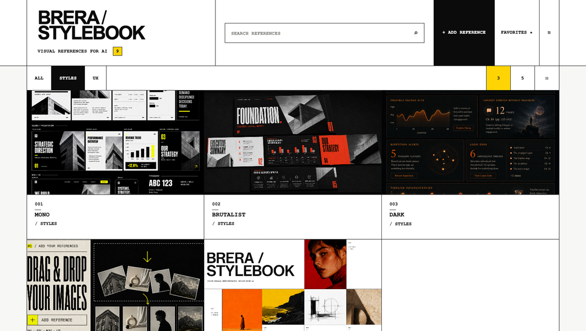

Get started
BRERA Stylebook is a local visual-reference library. Version 1.2.0 opens with 9 starter references already organised into STYLES and UX.
Extract the ZIP.Keep the complete
01-CUSTOMER-FILES folder together. Do not move assets/demo-data.js away from the main HTML file.Open START-HERE.html.Use a current version of Google Chrome for the most reliable image-copy experience.
Select “Open BRERA Stylebook”.The main library opens directly in your browser. No account is required.
Confirm the starter library.You should see 9 references and the category filters ALL, STYLES and UX.

Where your library livesYour references, categories and edits are stored by the browser on the current device. Treat exported backups as part of your normal workflow.